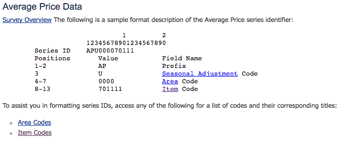
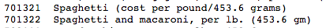

We had previously looked a little at JSON, but didn’t talk much about how to use it. When we receive a response from our API call, we get it in JSON string format. That is, the response is actually a string of text. We want to be able to handle the data programmatically, so we will need to parse the strings into JSON objects. This is done with the JSON.parse method. We can parse a JSON string and return a JSON object with this.
Here we create a JSON object, turn it into a string, and then parse it back again. We can use this in our app.get method take the response we get from the BLS API and handle it in our programs.
Lets use this to get the average price of spaghetti for a January 2015. To do this, we will need to look up the series id of the prices of spaghetti. Below shows how we format the series id to get the prices of specific foods. We will use an ID starting with APU0000. The APU is used as the prefix for food and seasonal adjustment. The 0000 stands for US average.

To complete the series ID, we need to give it an item code. Below we see the item code for spaghetti.

Now let's make a simple POST request to get the price of spaghetti in January 2015. We will be using the series ID APU0000701322.
Now there's a lot of new stuff here so I'll explain it in detail: